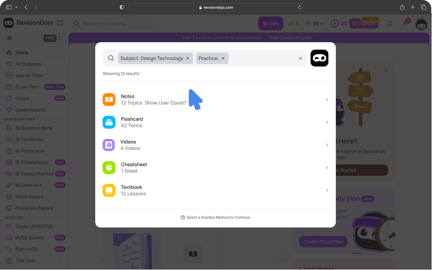

Hi, I'm Rebecca!
UX designer and researcher, passionate about going beyond design and into experience.
Currently @ Second Savour
RevisionDojo
Created a feature to help IB students surface the right content at the right time.

Hi, I'm Rebecca!
Currently @ Second Savour
Created a feature to help IB students surface the right content at the right time.